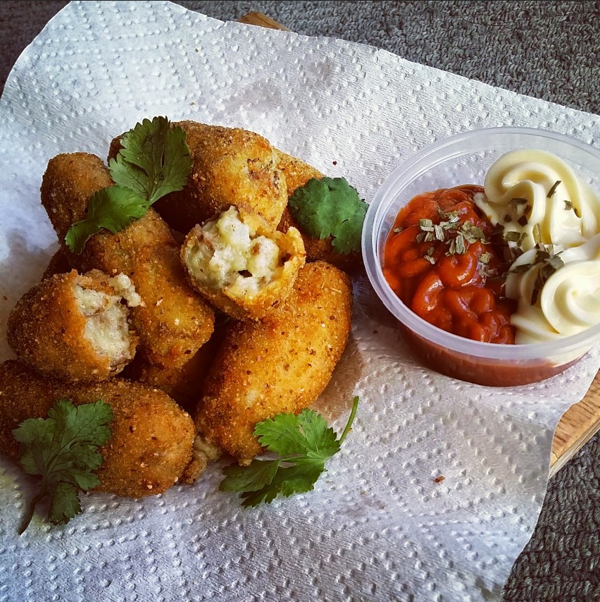
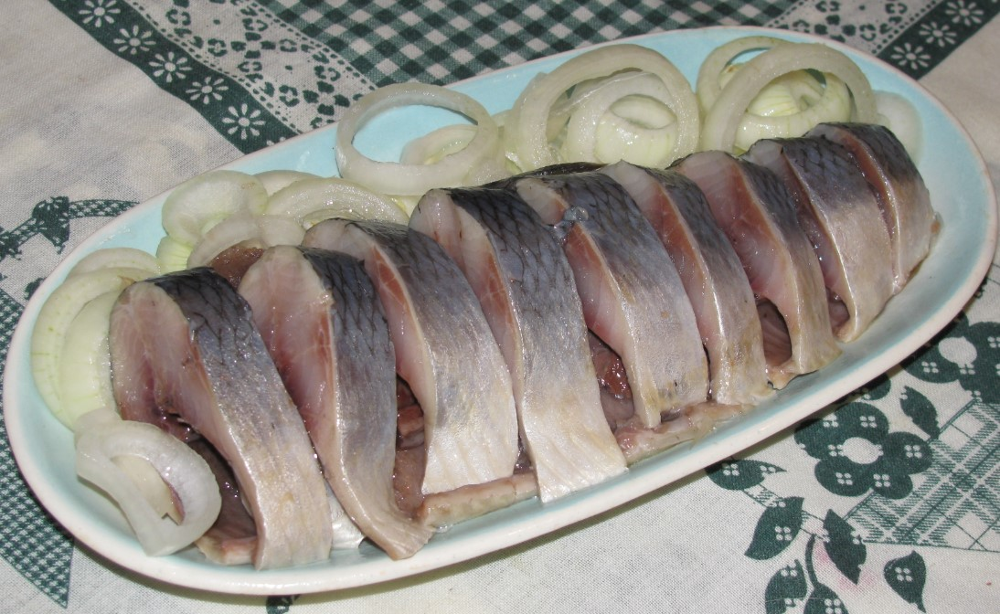
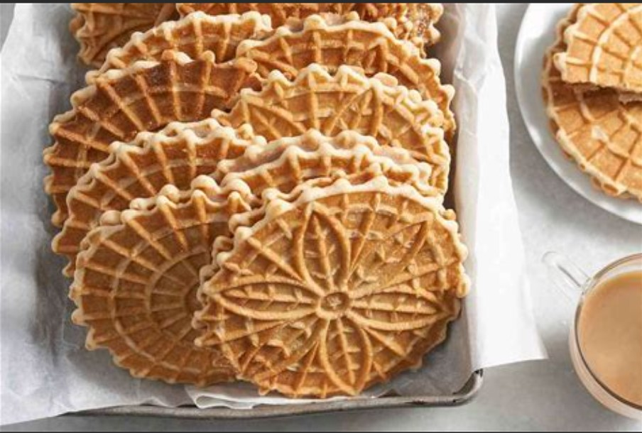

Kroket

These were one of my favorite treats in Holland and they have vending machines in the streets where you can get them all the time, they even had them at the amusement park!! McDonalds in Holland has a McCroquette too! there's is like breaded breading on bread but it was quite popular hehehehe. They are not hard at all give them a try. Mix and match the fillings to your liking as long as your stuffing is not to sloppy they should turn out fine.
Raw Herring

In Amsterdam, fish stands sell raw herring, a soused raw fish with a strong taste. Dutch raw herring is hugely popular in Amsterdam. In Holland, people have been eating raw herring for over 600 years. For foreigners, it might seem strange to eat a raw fish that has nothing to do with sushi.
Stroopwafels

A stroopwafel is a thin, round waffle cookie made from two layers of sweet baked dough held together by caramel filling. First produced in Gouda, South Holland, Netherlands, stroopwafels are a well-known split bill popular throughout the Netherlands and the former Dutch Empire and exported abroad.